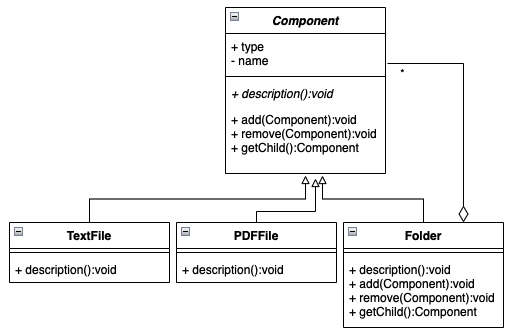

Langage JAVA
Modélisation OO
Module INF330 - Programmation avancée
Gustavo BOBEFF
2021 - 2022
Pourquoi modéliser?
- Abstraction = simplification
- Ignorer les détails insignifiants.
- Ressortir les détails les plus importants.
- La modélisation simplifie la compréhension et la communication autour du problème, elle ne simplifie pas le problème lui même.
Pourquoi modéliser?
- Gérer la complexité
- Permet de réfléchir sur la conception.
- Séparation des préoccupations
- Plusieurs points de vues sur le même problème (statique, comportementale, etc.)
Pourquoi modéliser?
- Communiquer
- Plusieurs acteurs dans le procédé de développement.
- Le code n'est pas toujours compréhensible par les développeurs qui ne l'ont pas écrit
- Nouvelles façons de travailler
- outsourcing, sous-traitance, etc.
Pourquoi modéliser?
- Pérénniser la connaissance sur le métier
- Projets de longue durée.
- Rotation importante des intervenants
- Conserver le savoir-faire sans les détails techniques
Pourquoi modéliser?
- Augmenter la productvité
- Génération de code à partir des modèles (Model-Driven Engineering)
- Identifier les variantes
Support de la modélisation
- Langage
- But : pouvoir transmettre le résultat de la modélisation d'une solution.
- Plusieurs langages existaient/existent mais un seul a réussi à s'imposer sur la marché.
- UML (Unified Modeling Language) : Il s'agit d'une notation graphique internationale standard de l'industrie utilisée pour décrire, visualiser, construire et documenter la phase de modélisation
UML : Histoire
- Au milieu des années 90, G. Booch, I. Jacobson et J. Rumbaugh (chacun auteur d'un langage différent de modélisation) ont chacun commencé à adopter les idées des autres
- Les 3 auteurs ont souhaité créer un Langage de Modélisation Unifié.
- Aujourd'hui :
- lengage de modélisation OO le plus connu et utilisé
- appliqué à plusieurs domaines
UML : Utilisations
- Explorer : Comme langage pour faire de croquis, esquisses, ébauches, ...
- permet d'analyser, réfléchir, décider, de communiquer rapidement autour d'une idée
- Spéficier : Comme langage de spécification de modèles, patrons, ...
- permet de spécifier modèles complets, prêts à être codés
- pour prendre des décisions poussées de design
- utilisé pour la génération de code (classes et signatures de méthodes, pas le corps)
- Produire : Comme langage de programmation
- génération et compilation du code à partir du modèle
UML : Diagrammes
| Classification | Types | Description |
| Structural | de classes | décrit la structure des classes et leurs relations |
| de composants | sert à montrer le lien entre les différents composants d'une application | |
| de déploiement | sert à identifier l'architecture physique (distributions, moyens, performance, etc.) | |
| de packages | un package sert d'espace de désignation (nommage), ce diagramme permet de grouper des éléments | |
| Comportamental | de cas d'utilisation | centré utilisateur, ils connaissent l'aspect fonctionnel du système |
| de séquences | représentation des exemples d'interaction entre objets dans la réalisation de processus de l'application | |
| de collaboration | similaire au diagramme de séquences mais l'accent est plus sur les objets impliqués que sur l'aspect temporel des échanges de messages | |
| de états/transitions | décrivent les séquences d'états d'un objet ou d'une opération | |
| d'activités | souvent utilisé pour modéliser les workflow (processus métier) |
UML : Diagramme de classes
- Un diagramme de classes est un graphe d'éléments connectés par des relations.
- Représentation détaillée d'une classe
- Représentation simplifiée
UML : Diagramme de classes
Variables d'instances ou de classe
- une classe peut contenir des variables d'instances ou de classe (attributs)
- syntaxe : [visibilité] nom : type [= valeur par défaut]
- visbilité
- '+' pour public
- '#' pour protected
- '-' pour private
- type : UML définit son propre ensemble de types (Integer, Real, string, ...)
- une variable de classe est soulignée
- si la variable est calculée alors elle est préfixée par le caractère '/'
|
UML : Diagramme de classes
Méthodes d'instances ou de classe
- une classe peut contenir des méthodes d'instances ou de classe (opérations)
- syntaxe : [visibilité] nom(paramètres) : type de retour
- visbilité
- '+' pour public
- '#' pour protected
- '-' pour private
- paramètres => nom : type
- type : UML définit son propre ensemble de types (Integer, Real, string, ...)
- une méthode de classe est soulignée
|
UML : Diagramme de classes
Associations
- une association est un lien stable (persistant) entre deux objets
- une association est composée de deux extrêmes (ends)
- un extrême est paramétré par :
- un nom (le rôle joué par l'entité connectée)
- une cardinalité (0, 1, *, 1..* ,
- un genre d'agrégation (composite, aggregation, aucun)
- notation :
UML : Diagramme de classes
Navigabilité
- le moyen d'accéder aux propriétés (variables et méthodes) d'autres objets à travers le graph d'objets représentant l'application
- représentée par une fleche
- un cours est suivi par plusieurs élèves (0 ou plusieurs)
- un élève suit des cours (0 ou plusieurs)
- à partir d'un élève, il est possible d'identifier les cours suivis (navigable) mais aussi le contenu des cours (chapitres)
UML : Diagramme de classes
Navigabilité - Génération de code
- l'impact de la navigabilité et des noms de rôles sur la génération de code
|
UML : Diagramme de classes
Agrégation & Composition
- notion de "est composé de", "contient", "est construit à partir de", "est formé de", ...
- renforce la sémantique de l'association
- agrégation :
- exprime une association faible (partagée)
- un composant peut faire partie de plusieurs composites
- le cycle de vie du composant n'est pas lié à celui du composite : si le composite est détruit, les composants restent
- composition :
- exprime une association forte (n'est pas partagée)
- un composant ne fait partie que d'un seul composite
- le cycle de vie du composant est lié à celui du composite
UML : Diagramme de classes
Agrégation & Composition : notation
UML : Diagramme de classes
Généralisation (Héritage)
- c'est une relation et non pas un type d'association
- permet de partager les points communs (variables, méthodes et associations)
- peut être simple ou multiple
- notation :
UML : Diagramme de classes
Généralisation : Héritage des associations
UML : Diagramme de classes
Généralisation : Classes et méthodes abstraites
- une classe abstraite est une classe qui contient au moins une méthode abstraite
- une méthode abstraite est une méthode dont l'implémentation est laissée aux classes filles
- notation :
UML : Diagramme de classes
Les interfaces
- ensemble de méthodes sans implémentation : juste la signature
- peut être vue comme une classe abstraite dont toutes les méthodes sont abstraites
- une classe peut "réaliser" une ou plusieurs interfaces
- notation :
UML : Diagramme de classes
Un exemple
UML : Diagramme de séquences
- Objectif : représenter des exemples (instances) d'interaction entre objets dans la réalisation.
- Deux dimensions :
- l'axe horizontal représente les différents objets
- l'axe vertical représente le temps
- Un exemple :
UML : Diagramme de séquences
Constituants
- Objets : sont instances de classes qui participent à l'interaction et représentés avec une ligne de vie.
- Messages : est une communication entre objets pour communiquer une information ou bien déclencher une action.
- simple (call)
- asynchrone
- de retour (peut être omis)
UML : Diagramme de séquences
Messages de création et de destruction
UML : Diagramme de séquences
Bande d'activation
- permet de voir quand l'objet est actif dans l'interaction
UML : Outils en ligne
diagrams.net
- Création d'un diagramme
UML : Outils en ligne
diagrams.net
- Sélection d'un diagramme de classes
UML : Outils en ligne
diagrams.net
- Sélection d'un diagramme de séquences
Patrons de conception (design pattern)
- solution générale et réutilisable d’un problème récurrent
- un patron est nommé et décrit en détail dans un répertoire de patrons
- le livre "Design Patterns, Elements of Reusable Object-Oriented Software de Gamma et al." (Gamma, Helm, Johnson et Vlissides ... gang of four) est à l'origine de l'utilisation de cette notion en informatique
- trois familles de patrons de conception
- Créateurs (creational): ils définissent comment faire l'instanciation et la configuration des classes et des objets.
- Singleton, Factory, Abstract Factory, Builder, Prototype, ...
- Structuraux (structural): ils définissent comment organiser les classes d'un programme dans une structure plus large (séparant l'interface de l'implémentation).
- Adapter, Composite, Decorater, Facade, Proxy, ...
- Comportementaux (behavioral): ils définissent comment organiser les objets pour que ceux-ci collaborent (distribution des responsabilités) et expliquent le fonctionnement des algorithmes impliqués.
- Observer, Strategy, State, Command, Iterator, ...
Patrons de conception (design pattern)
Creational : Singleton pattern
- Objective : Garantir qu'une classe aura une seule instance et fournir un accès global à cette instance.
- Structure :
Patrons de conception (design pattern)
Creational : Singleton pattern (implémentation JAVA)
- Classe Connection
- Classe ClientConnection
résultat
Patrons de conception (design pattern)
Structural : Composite pattern
- Objective : Composer plusieurs objets dans une structure d'arbre pour représenter une hiérarchie en traitant les objets feuilles et composés de la meme façon.
- Structure :
- Exemple : 
|
|
|
Patrons de conception (design pattern)
Structural : Composite pattern (implémentation JAVA)
- Classe Component
- Classe PdfFile
- Classe TextFile
Patrons de conception (design pattern)
Structural : Composite pattern (implémentation JAVA)
- Classe Component
Patrons de conception (design pattern)
Structural : Composite pattern (implémentation JAVA)
- Classe Client
résultat
Patrons de conception (design pattern)
Behavioral : Strategy pattern
- Objective : Définir une famille d'algorithmes, et encapsuler chacun et les rendre interchangeables tout en assurant que chaque algorithme puisse évoluer indépendamment des clients qui l'utilisent.
- Structure :
- Exemple :
|
|
|
Patrons de conception (design pattern)
Behavioral : Strategy pattern (implémentation JAVA)
- Interface SortStrategy
- Classe InsertionSort
- Classe SelectionSort
- Classe Quicksort
Patrons de conception (design pattern)
Behavioral : Strategy pattern (implémentation JAVA)
- Classe Context
- Classe Client
résultat